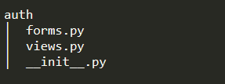

Auth is the Flask blueprint for the authentication. We create files as the following picture.
We initialize the blueprint with this code.
We create a blueprint named auth, import the route settings from the file view.py.
We setting the routes and logics with this code.
We defined two entry functions: login and logout. logout is decorated with login_required, requiring the user being authenticated.
This is the entry function for the administrator login routing with the url '/login'. It accepts GET and POST request methods. If the method is GET, it returns the login form with the template '/auth/login.html'. If the method is POST, it collect the name and password from the request, verifying if the administrator exists. If the information correct, the user will be authenticated and be redirected to the backstage. Otherwise, it shows the error message and stay in the the login page.
This is the entry function for the admin to logout their account routing with the url '/logout'. If the request is from a administrator already login, the user logout and be redirected to the front end.
We design the relating forms with this code.
We defined one form class with the FlaskForm class provided by flask-wtf: LoginForm.
This form contains two string fields for input the account information, one checkbox for specifying keeping logged in or not, and a submit button for sending the post request.